Facultad de Ingeniería de Sistemas Computacionales
Lic. en Desarrollo y Gestión de Software
Tópicos Especiales II
Laboratorio 12 — Desarrollo con un agente cloud
1GS241
Presentado por:
Ríos, Gerald (8-987-741)
Revisado por:
Profesor Regis Rivera
Fecha de entrega
30 / 10 / 2026
Índice
Introducción3
1. Repositorio y línea base3
1.1 Repositorio utilizado3
1.2 Línea base3
2. Issue original4
3. Delegación y sesión del agente6
4. Primer Pull Request7
4.1 Lo que dice el agente7
4.2 Diff revisado archivo por archivo8
4.3 Checks y pruebas del agente11
4.4 Caso no cubierto12
5. Solicitud de corrección y segunda iteración13
5.1 Comentario enviado13
5.2 Qué cambió14
5.3 Validación local de la segunda versión14
6. Decisión e integración14
7. Trazabilidad15
8. Reto: segundo issue16
8.1 Issue redactado16
8.2 Pull Request #417
8.3 Validación local y caso no cubierto19
8.4 Revisión e integración20
9. Preguntas de reflexión22
Conclusiones24
Introducción
Este laboratorio pide delegar una tarea de ingeniería a un agente que trabaja en un entorno remoto y revisar después lo que entrega, como se haría con la contribución de otro desarrollador. Usamos la ruta principal del enunciado, GitHub Copilot cloud agent, sobre un repositorio privado con un gestor de tareas muy pequeño en Python. La tarea fue agregar categorías y filtrado, y como reto agregamos una función para eliminar tareas por ID.
El informe sigue el orden del trabajo: la línea base, el issue, la delegación, la revisión del primer Pull Request, la corrección que pedimos y la segunda iteración, la decisión de integrar, el reto y las respuestas de reflexión. Cada afirmación sobre lo que hizo el agente tiene detrás una salida de terminal, un JSON de la API de GitHub o una captura, guardados en la carpeta de evidencia. El repositorio es privado, así que las capturas muestran lo que expone la API y la ejecución local, no las páginas web de GitHub.
1. Repositorio y línea base
1.1 Repositorio utilizado
El repositorio se llama laboratorio-agente-cloud, es privado y está en la cuenta Gerxld: https://github.com/Gerxld/laboratorio-agente-cloud. Se creó el 29/10/2026 con un README, y encima se subieron los tres archivos del enunciado (tasks.py, app.py y tests/test_tasks.py) en un solo commit de línea base. El agente cloud estaba habilitado para la cuenta: al asignarle el issue empezó a trabajar sin ninguna configuración adicional.
1.2 Línea base
Antes de delegar corrimos python app.py y las pruebas sobre el clon local. Con Python 3.13.5 el programa imprime la única tarea pendiente y las dos pruebas iniciales pasan. Esa salida es el punto de comparación para todo lo que vino después.
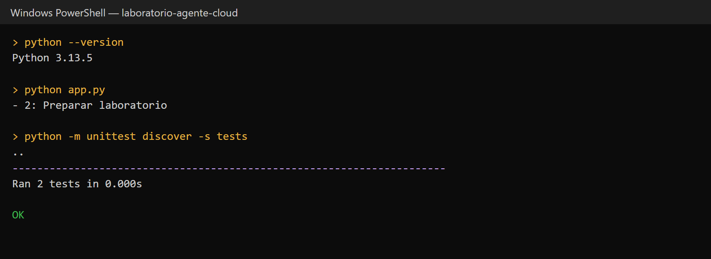
Figura 1. Línea base: salida de python app.py y de las pruebas antes de delegar.
2. Issue original
El issue #1, «Agregar categorías y filtrado de tareas», se creó sin asignar y con las cinco partes que pide el enunciado: objetivo, alcance, restricciones, criterios de aceptación y validación. Partimos del texto del enunciado y lo ajustamos al hacernos la pregunta del paso 9, si otro desarrollador sabría cuándo está terminado. Agregamos tres cosas: el mensaje exacto del error para la categoría vacía, qué pasa al filtrar por una categoría que nadie tiene (lista vacía, no error) y que el Pull Request solo toque los tres archivos del alcance.
Hubo una contradicción que no vimos al escribirlo. El issue exige que agregar_tarea reciba la categoría como parámetro obligatorio y, a la vez, que las dos pruebas actuales sigan pasando «sin cambiarlas». Esas pruebas llaman a agregar_tarea con dos argumentos, así que con una categoría obligatoria no pueden pasar tal cual. El agente resolvió el choque modificando esas dos llamadas, y lo aceptamos porque no había otra salida compatible con el criterio de «categoría no vacía». Lo anotamos como defecto de nuestro issue, no del agente.
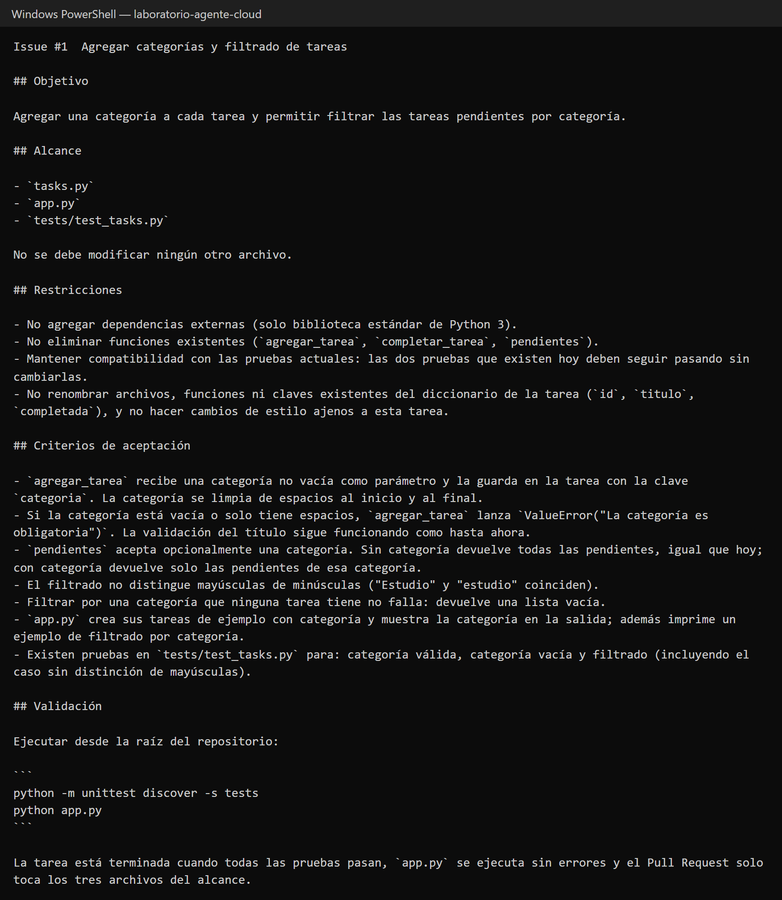
Figura 2. Cuerpo del issue #1 con objetivo, alcance, restricciones, criterios de aceptación y validación.
3. Delegación y sesión del agente
3.1 Asignación
El issue se asignó a Copilot el 29/10/2026 a las 16:03:31 UTC. En ocho segundos el agente creó el Pull Request #2 en borrador, con un primer commit vacío llamado «Initial plan», y quedó conectado al issue. A partir de ahí no tocamos nada del repositorio mientras trabajaba.
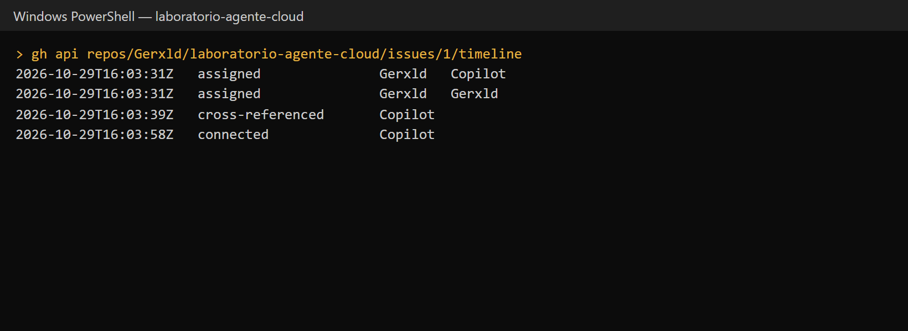
Figura 3. Línea de tiempo del issue #1: asignación a Copilot y conexión con el Pull Request.
3.2 Qué ocurrió en el entorno remoto
La API de GitHub no expone el registro paso a paso de la sesión, que solo se ve en la página web del Pull Request, y no pudimos capturarlo porque el repositorio es privado. Lo que sí queda es la línea de tiempo del Pull Request (copilot_work_started a las 16:03:58 y copilot_work_finished a las 16:06:25) y el run de GitHub Actions «Running Copilot cloud agent», que terminó con éxito. Fueron unos dos minutos y medio. En ese tiempo el agente levantó un entorno Linux, editó los tres archivos, hizo el commit y renombró el Pull Request, sin que nuestra computadora participara.
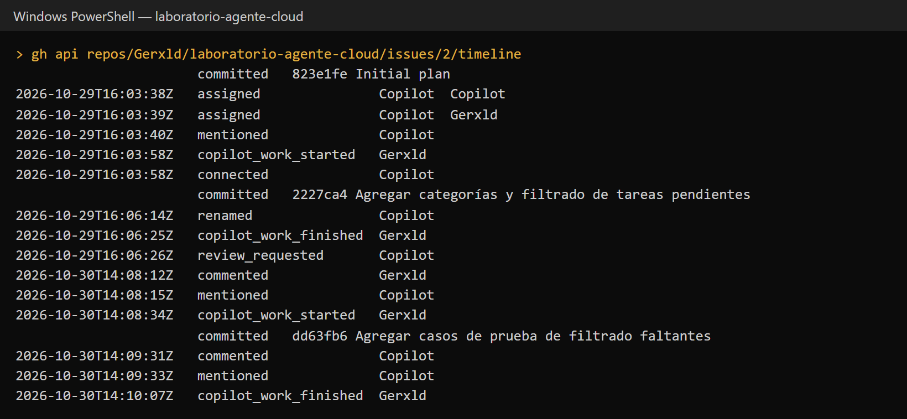
Figura 4. Línea de tiempo del Pull Request #2: sesión del agente, primera iteración y segunda.
4. Primer Pull Request
4.1 Lo que dice el agente
Antes de abrir el diff leímos la descripción del Pull Request. El agente afirma que agregar_tarea ahora recibe y limpia la categoría y lanza «La categoría es obligatoria» si queda vacía, que pendientes acepta una categoría opcional sin distinguir mayúsculas, que app.py usa categorías y muestra un filtrado, y que agregó pruebas para categoría válida, vacía y filtrado. No dice que haya ejecutado las pruebas, y eso quedó como lo primero por verificar.
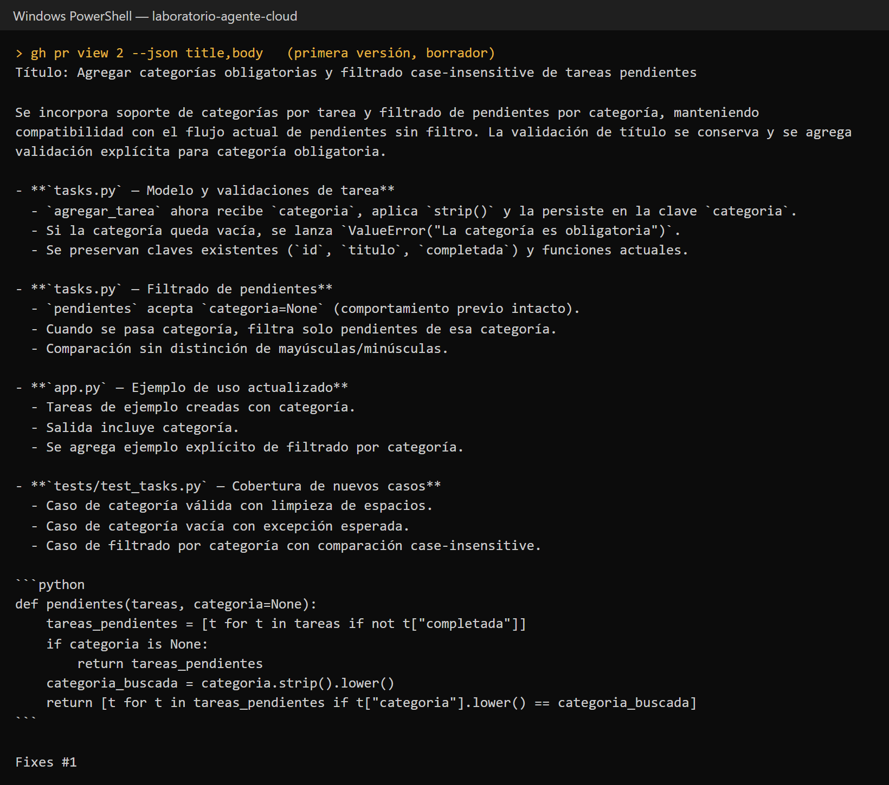
Figura 5. Explicación del agente en la primera versión del Pull Request #2.
4.2 Diff revisado archivo por archivo
El Pull Request toca exactamente los tres archivos del alcance (41 inserciones y 9 eliminaciones en la primera versión). No hay dependencias nuevas, archivos ajenos ni renombrados. En tasks.py la validación de la categoría sigue el mismo patrón que la del título, y pendientes conserva el comportamiento anterior cuando no recibe categoría.
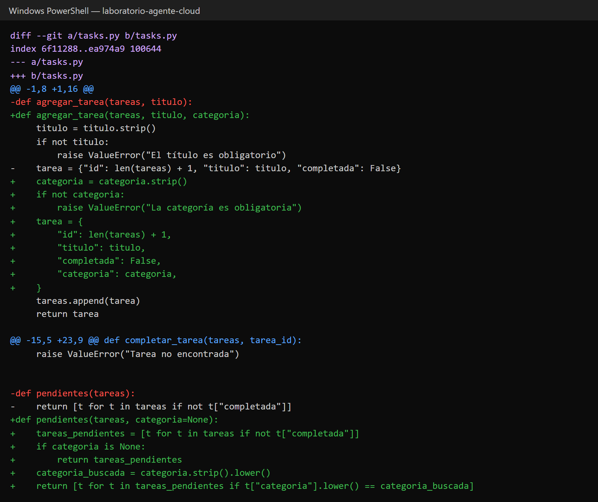
Figura 6. Diff de tasks.py en el Pull Request #2.
El cambio de app.py son las categorías en las tareas de ejemplo, la categoría en la salida y un segundo bloque que imprime el filtrado por «trabajo».
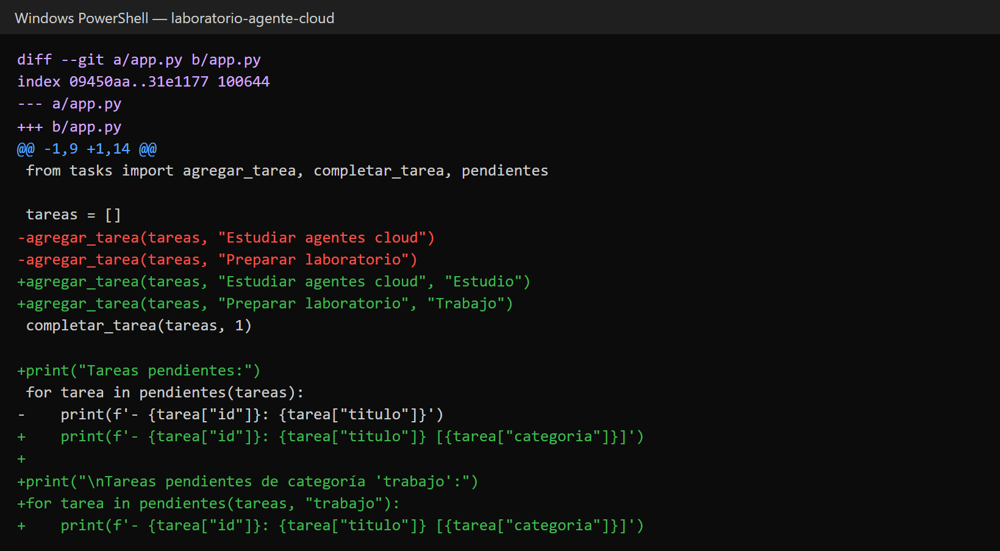
Figura 7. Diff de app.py en el Pull Request #2.
En las pruebas, el agente modificó las dos existentes solo para pasar la categoría, lo que ya mencionamos, y agregó dos pruebas nuevas.
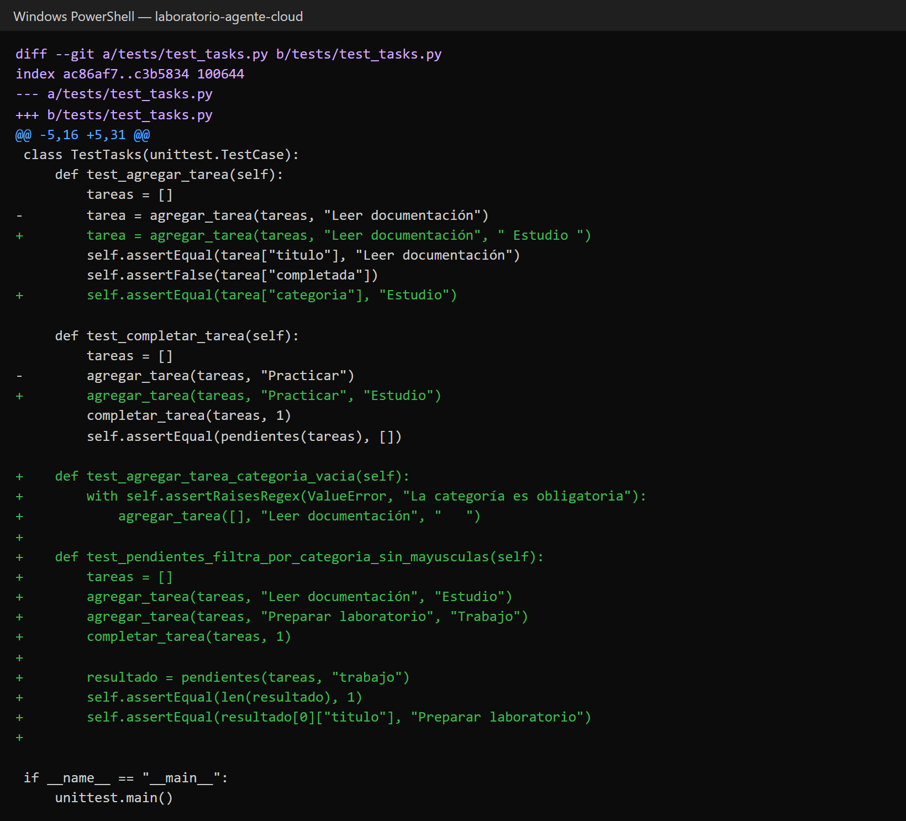
Figura 8. Diff de tests/test_tasks.py en la primera versión.
4.3 Checks y pruebas del agente
El repositorio no tiene un workflow propio, así que el Pull Request no mostró ningún check de pruebas (statusCheckRollup vacío). Lo único que existe es el run del propio agente, que prueba que la sesión terminó bien pero no que las pruebas hayan pasado: el registro con los comandos ejecutados está en la web, que no pudimos ver. Por eso la validación local dejó de ser un trámite y se volvió la única evidencia de pruebas que teníamos.
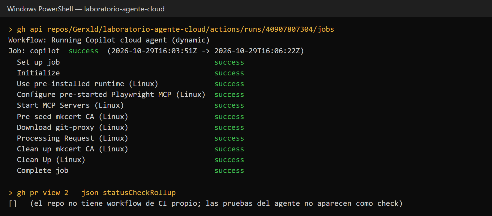
Figura 9. Run del agente y estado de checks del Pull Request #2.
Corrimos nosotros la rama del agente. Las cuatro pruebas pasan y app.py se ejecuta sin errores.
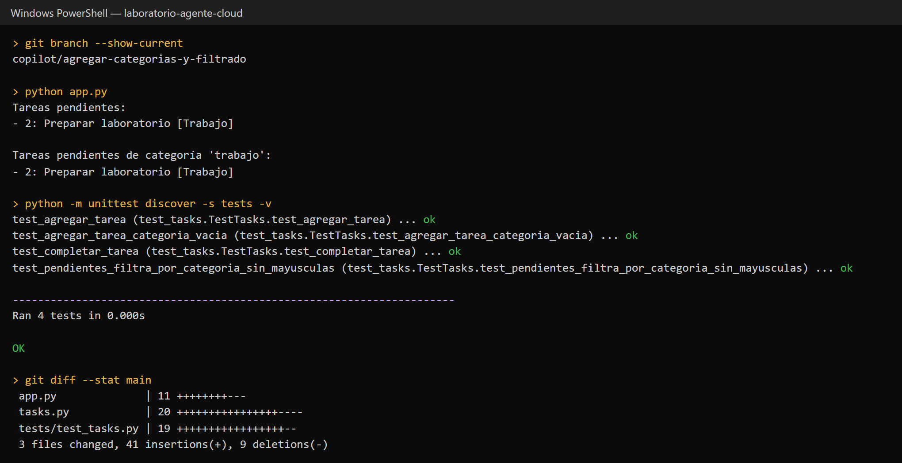
Figura 10. Validación local de la primera versión (4 pruebas).
4.4 Caso no cubierto
Buscamos a propósito lo que el issue pedía y las pruebas no probaban. La prueba de filtrado solo usa una categoría que existe y la escribe en minúsculas; nunca filtra por una categoría que ninguna tarea tiene, algo que el issue pide de forma explícita, ni con la consulta en mayúsculas. Probamos a mano pendientes(tareas, "zzz") y devolvió [], así que la implementación estaba bien y lo que faltaba era la prueba. También vimos que pendientes(tareas, "") devuelve lista vacía en lugar de fallar; el issue no lo especifica, así que lo dejamos como comportamiento no definido y no lo pedimos.
5. Solicitud de corrección y segunda iteración
5.1 Comentario enviado
Comentamos en el Pull Request mencionando a Copilot. La petición fue concreta: agregar dos pruebas, una para categoría inexistente con lista vacía y otra para la consulta en mayúsculas, sin tocar la API pública ni agregar dependencias, y sin cambiar tasks.py ni app.py salvo que una prueba revelara un fallo. El agente empezó a trabajar 22 segundos después del comentario y terminó a las 14:10:07 UTC del 30/10/2026.
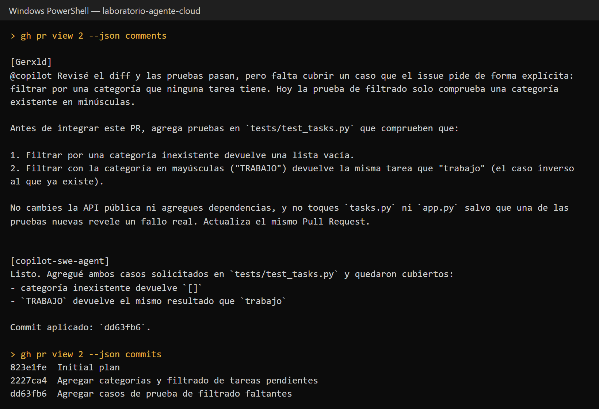
Figura 11. Solicitud de corrección, respuesta del agente y commits del Pull Request.
5.2 Qué cambió
El agente respondió en el mismo Pull Request con un tercer commit, dd63fb6, que solo toca tests/test_tasks.py y suma las dos pruebas pedidas. No cambió ninguna de las líneas que ya habíamos revisado.
5.3 Validación local de la segunda versión
Hicimos pull de la rama y repetimos las dos ejecuciones. Pasaron las seis pruebas y app.py produjo la misma salida que antes. La captura incluye el git diff --stat contra main: 56 inserciones y 9 eliminaciones, en los mismos tres archivos.
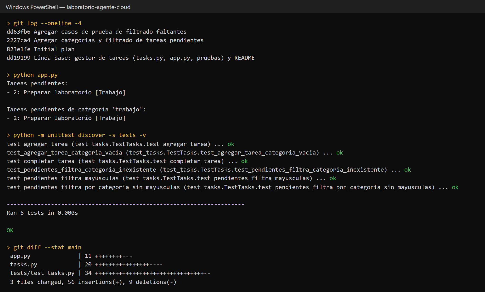
Figura 12. Validación local de la segunda versión (6 pruebas).
6. Decisión e integración
Evaluamos el Pull Request con los criterios que usaríamos para el de una persona: corrección funcional, alcance, claridad, pruebas y mantenibilidad. Cumple los criterios de aceptación del issue, no hay cambios fuera del alcance, el código es corto y legible, y la retroalimentación se atendió sin ruido. La debilidad que encontramos al principio era de cobertura, no de comportamiento, y quedó resuelta. Aprobamos la revisión, sacamos el borrador, lo fusionamos con un commit de merge para que el historial muestre la rama del agente, y el issue #1 se cerró solo gracias al «Fixes #1» del Pull Request.
Después del merge hicimos pull de main y volvimos a correr todo. Las seis pruebas pasan y la aplicación imprime lo mismo.
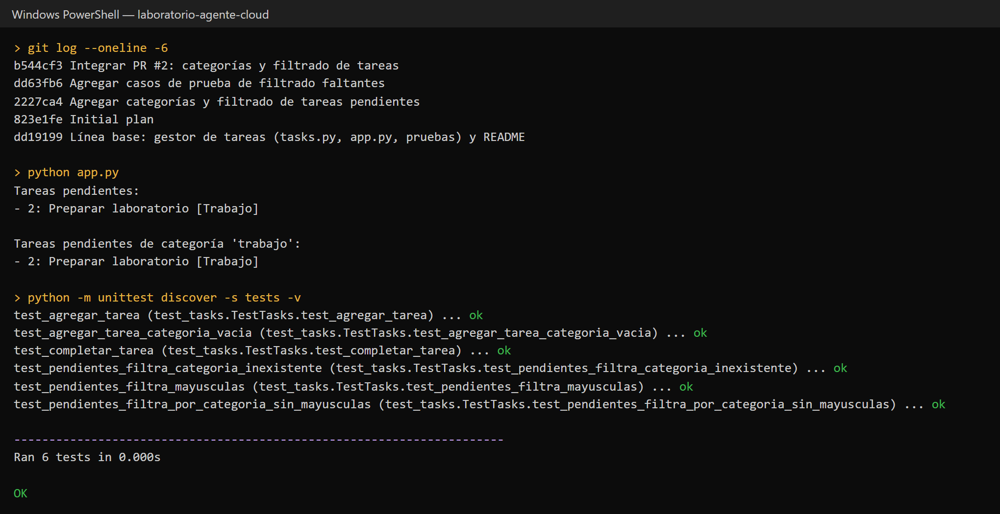
Figura 13. Validación local de main después del merge del Pull Request #2.
7. Trazabilidad
Al terminar el ciclo, GitHub guardó el issue con su asignación, el Pull Request con las confirmaciones del agente, el comentario de la solicitud y la respuesta, la aprobación, el merge y los runs de Actions, todo con hora. Cada commit del agente lleva como coautor a nuestra cuenta, de modo que se distingue quién escribió y quién decidió. En un chat web quedaría una conversación que podemos copiar, pero sin la rama, el diff atado a una versión, la revisión formal ni el registro de quién integró qué.
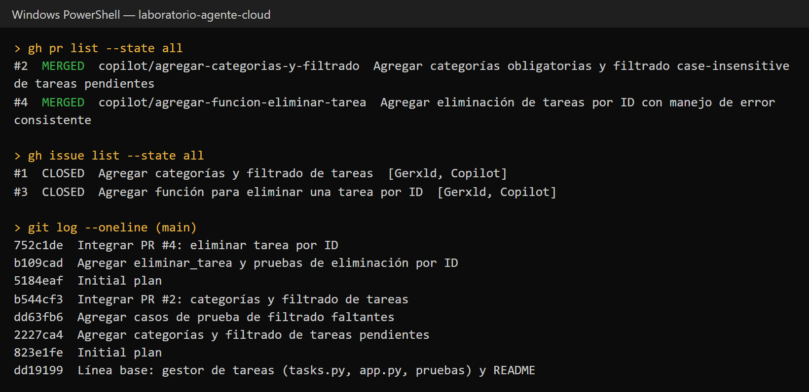
Figura 14. Pull Requests, issues y commits que quedaron registrados en el repositorio.
8. Reto: segundo issue
8.1 Issue redactado
El segundo issue es «Agregar función para eliminar una tarea por ID». Lo escribimos con la misma estructura: la función eliminar_tarea(tareas, tarea_id), que devuelve la tarea eliminada, el mismo mensaje de error que completar_tarea, alcance limitado a tasks.py y las pruebas, y la restricción de no renumerar IDs. Por orden de creación recibió el número 3, porque el #2 ya lo tenía el Pull Request del primer ciclo. Se asignó a Copilot el 30/10/2026 a las 14:11:36 UTC y el agente abrió el Pull Request #4.
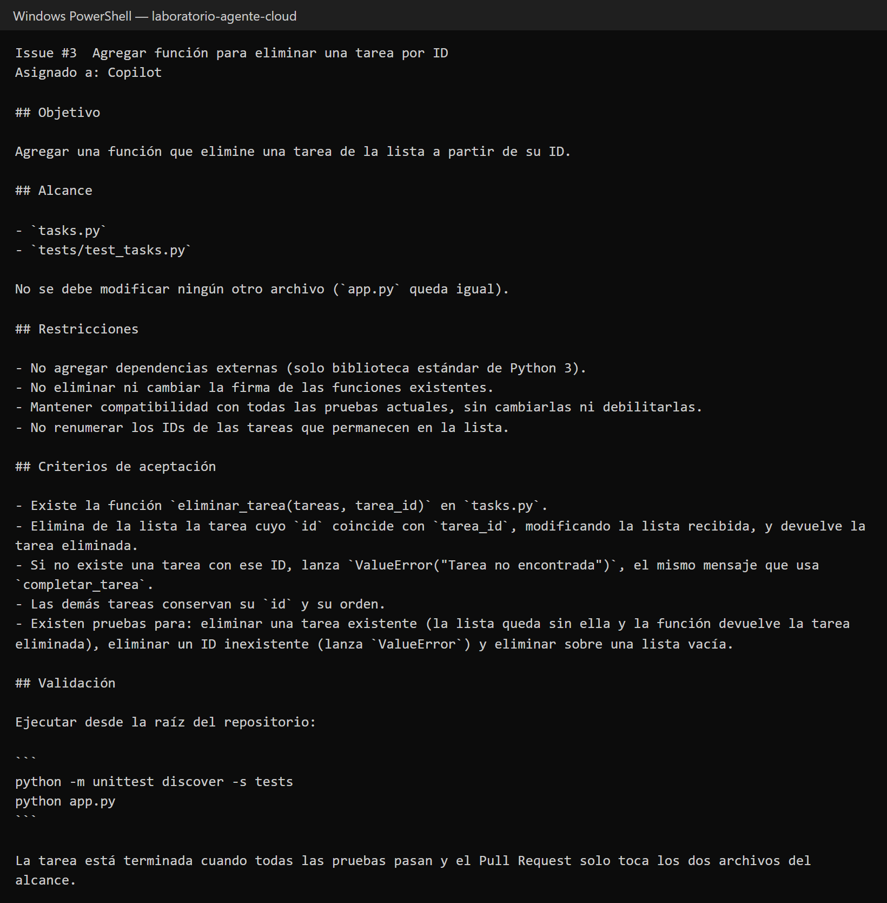
Figura 15. Segundo issue, correspondiente al reto.
8.2 Pull Request #4
El agente trabajó unos tres minutos (14:11:57 a 14:14:45 UTC) y dejó el Pull Request en borrador con dos archivos tocados, los del alcance.
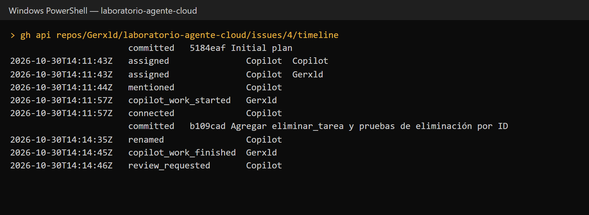
Figura 16. Línea de tiempo del Pull Request #4.
La función recorre la lista con enumerate, hace pop en el índice de la coincidencia y devuelve la tarea; si no encuentra nada, lanza ValueError("Tarea no encontrada").
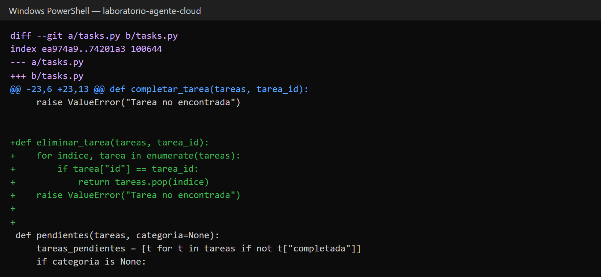
Figura 17. Diff de tasks.py en el Pull Request #4.
Las tres pruebas pedidas existen: eliminar una tarea existente, un ID inexistente y una lista vacía. La primera comprueba también que la tarea restante conserva su ID y no solo el largo de la lista.
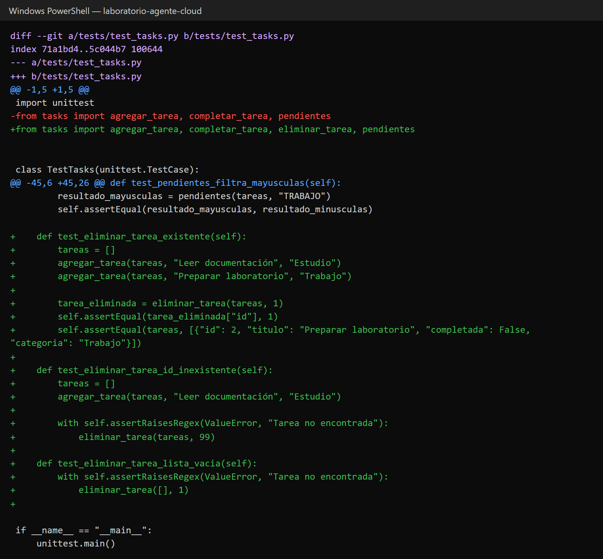
Figura 18. Diff de tests/test_tasks.py en el Pull Request #4.
8.3 Validación local y caso no cubierto
En local pasan las nueve pruebas y app.py corre igual que antes. Además probamos algo que ni el issue ni el agente cubren: el defecto que ya traía el código base, donde agregar_tarea calcula el ID como len(tareas) + 1. Con las tareas 1 y 2, al eliminar la 1 y agregar una nueva, la lista queda con dos tareas de ID 2, y completar_tarea(t, 2) marca la primera que encuentra, que no es la nueva. Eliminar hace más fácil llegar a este error, pero el issue prohibía renumerar y tocar otras funciones.
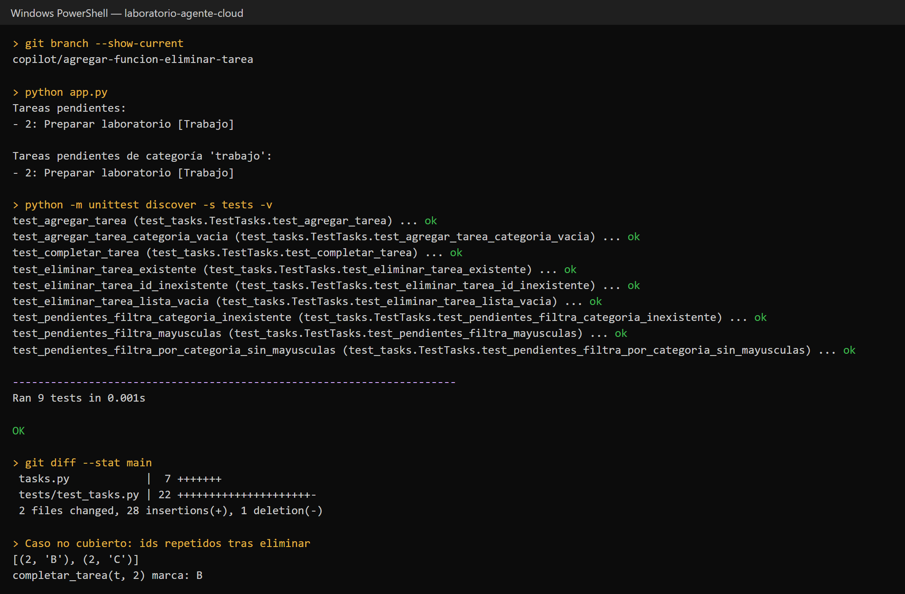
Figura 19. Validación local del Pull Request #4 y caso de IDs repetidos.
8.4 Revisión e integración
Dejamos aprobada la revisión con la nota del caso no cubierto y fusionamos, porque el Pull Request cumple todo lo que el issue exigía y el defecto de los IDs pertenece a otra tarea que conviene abrir aparte. Esta vez no pedimos segunda iteración, ya que no había nada dentro del alcance que corregir. El issue #3 se cerró con el merge, y al final probamos main actualizado.
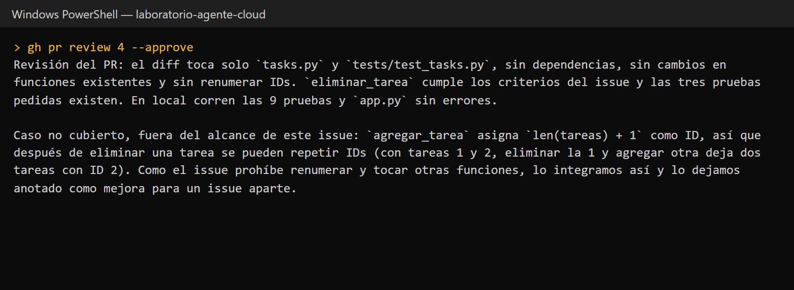
Figura 20. Revisión aprobada del Pull Request #4 antes del merge.
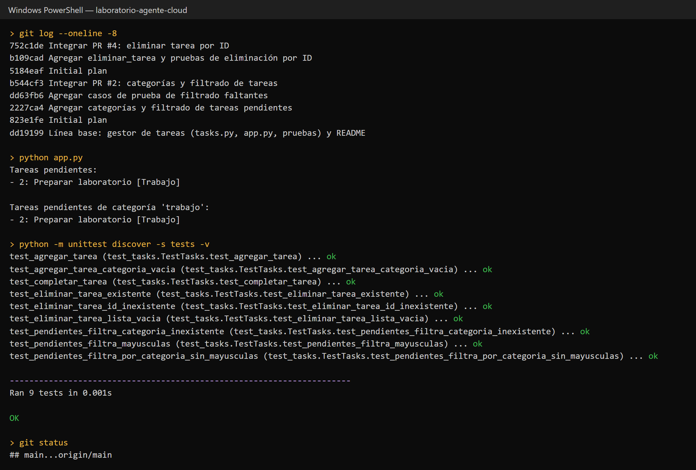
Figura 21. Validación local final de main con ambos Pull Requests integrados.
Un descuido nuestro durante este ciclo: al asignar el issue a Copilot usamos primero el número 2, y el comando asignó a Copilot al Pull Request #2, que ya estaba integrado. No arrancó ninguna sesión, porque no aparece un run nuevo, y quitamos la asignación enseguida, pero fue un error de numeración que conviene anotar.
9. Preguntas de reflexión
9.1 ¿Qué diferencia fundamental existe entre un CLI Agent y un agente cloud?
El CLI Agent corre en nuestra máquina, con nuestros archivos y nuestra terminal, y trabaja mientras lo acompañamos. El agente cloud corre en un entorno remoto que él mismo levanta a partir del repositorio, y lo hace de forma asíncrona: entregamos la tarea y volvemos a una rama y un Pull Request. La diferencia no está en el modelo sino en dónde ejecuta y cuánta supervisión paso a paso necesita.
9.2 ¿Qué parte del trabajo pudo continuar aunque no estuviéramos ejecutando nada en la computadora?
Todo el ciclo del agente: leer el repositorio, editar los archivos, crear los commits en la rama y abrir y describir el Pull Request. En la segunda iteración también respondió el comentario y empujó el commit sin que tuviéramos nada abierto. Lo único que dependió de nosotros fue redactar el issue, revisar y decidir.
9.3 ¿Por qué un Pull Request es una buena frontera de control entre el agente y el desarrollador?
Porque el agente nunca escribe en main. Todo lo suyo queda en una rama separada, con un diff comparable contra el estado aprobado, y integrarlo exige un acto deliberado nuestro. Además concentra en un solo lugar la explicación, los commits, los checks y la conversación, y es el mismo mecanismo que usamos con compañeros de equipo, así que no hace falta inventar un proceso especial para el agente.
9.4 ¿Qué riesgo existiría si el agente pudiera hacer merge automáticamente sin revisión?
Cualquier error entraría directo al código base: una prueba débil que da falsa seguridad, un cambio fuera de alcance o una dependencia no pedida. En este laboratorio lo vimos a escala pequeña. El primer Pull Request pasaba sus propias pruebas y aun así dejaba sin probar un caso que el issue pedía, y el defecto de los IDs repetidos habría quedado sin que nadie lo notara. Un merge automático elimina justo el momento en que una persona se hace esas preguntas.
9.5 ¿Qué información debe contener un issue para que una tarea sea realmente delegable?
Un objetivo claro, el alcance en archivos, las restricciones, criterios de aceptación que se puedan comprobar (mensajes de error exactos, qué hacer en los casos límite) y el comando de validación. La prueba práctica es que otra persona, o un agente, sepa cuándo terminó sin preguntar. Nuestro propio issue tenía una contradicción entre la categoría obligatoria y «no cambiar las pruebas actuales», y el agente tuvo que decidir solo; un issue delegable no deja esa decisión en manos del agente.
9.6 ¿En qué tipo de tareas usaríamos un agente cloud y en cuáles trabajaríamos de forma interactiva?
Usaríamos un agente cloud en tareas acotadas, con criterios verificables y poco contexto fuera del repositorio, como las de este laboratorio: agregar una función con sus pruebas, corregir un error reproducible o actualizar documentación. Trabajaríamos de forma interactiva cuando el diseño aún no está claro, cuando hay que explorar varias opciones, depurar algo que depende de nuestro entorno o decidir aspectos de producto, porque ahí la conversación rápida vale más que la revisión posterior.
Conclusiones
Completamos el ciclo con el agente en dos tareas. El primer Pull Request cumplía el issue y dejó afuera una prueba que sí estaba pedida, algo que solo se vio al comparar el diff con los criterios y probar a mano el caso de la categoría inexistente. Un comentario concreto bastó para que Copilot lo corrigiera en el mismo Pull Request, con un commit que no tocó nada más. El segundo Pull Request llegó completo, y lo revisamos igual de a fondo.
También hubo cosas que costaron. No pudimos ver el registro interno de la sesión del agente porque el repositorio es privado y la API no lo expone, de modo que las pruebas del agente quedaron sin evidencia propia y dependimos de la ejecución local. Nuestro issue tenía una contradicción que no vimos antes de delegar, y un número mal puesto asignó a Copilot por error a un Pull Request ya cerrado. Además queda abierto un defecto del código base, los IDs repetidos tras eliminar tareas, que ninguno de los dos Pull Requests cubre y que conviene tratar en un tercer issue. El repositorio, con sus issues, ramas y Pull Requests, es la entrega de código; no incluimos un ZIP.